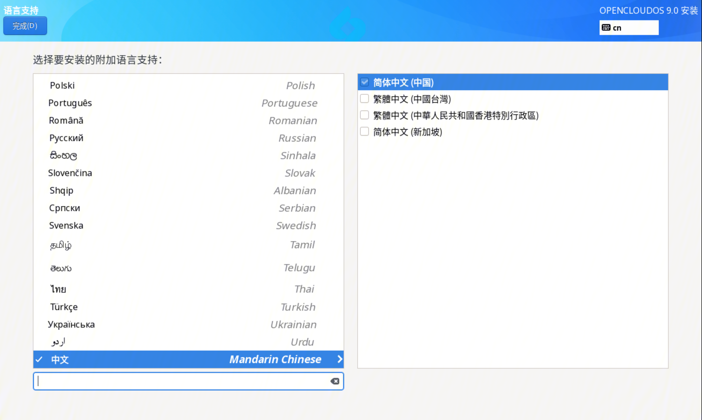
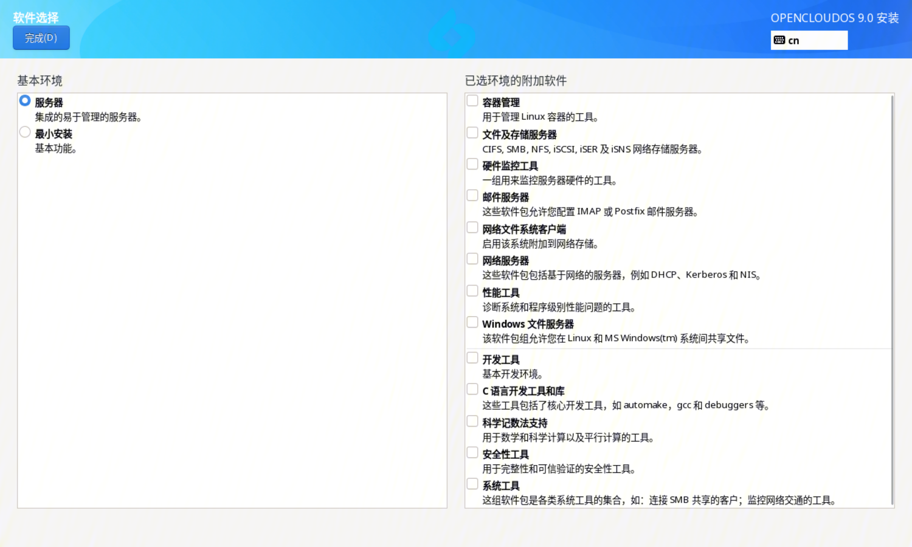
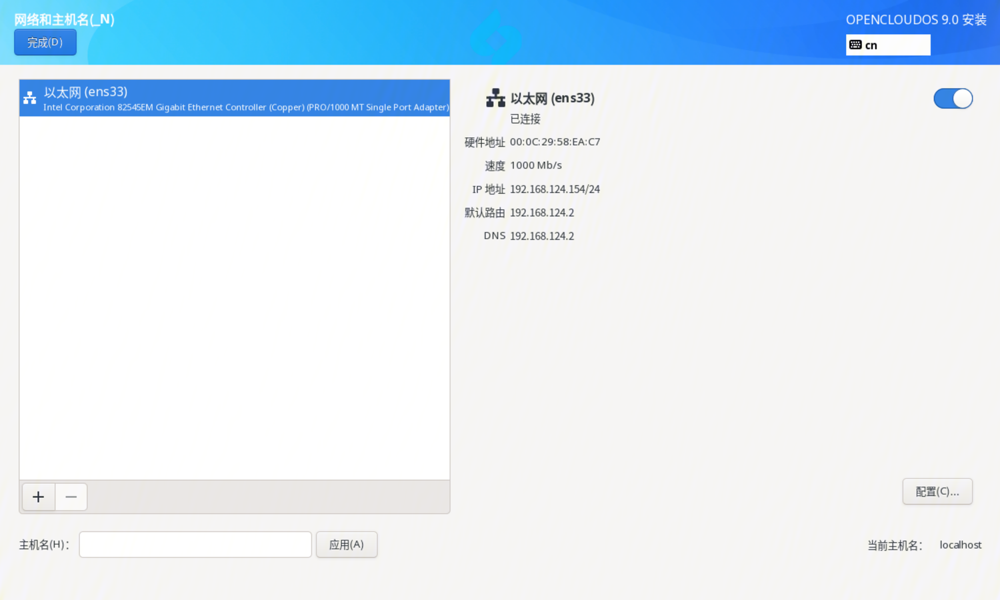
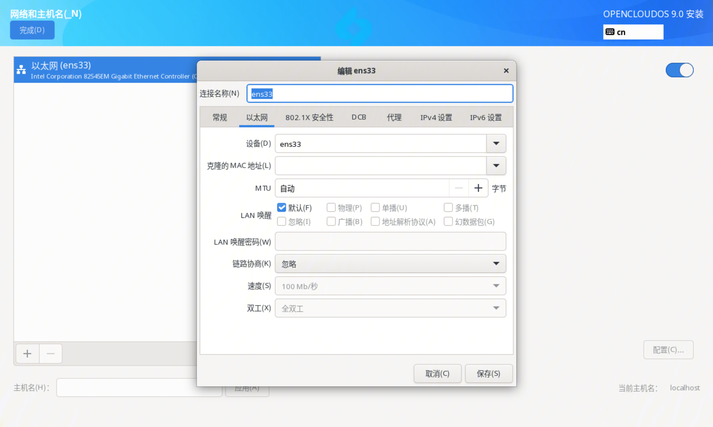

1. 概述
OpenCloudOS 9 是基于上游 OpenCloudOS Stream 社区研发的下一代服务器操作系统发行版，其内核及用户态软件均独立演进、自编译，独立选型和维护，不再依赖其他发行版。通过内核，用户态软件的全面优化和打磨，为用户和业务提供更先进、更高性能的基础环境和服务能力。
2. 安装方式
2.1 基于图形界面的安装
基于图形界面的安装有以下几种安装方式：
- 使用 ISO 镜像执行本地安装，本文主要介绍基于图形界面的 ISO 镜像安装。
- 使用 VNC 执行远程安装
- 使用 PXE 执行网络安装
2.2 基于文本界面的安装
基于图形界面的安装有以下几种安装方式：
- 使用 ISO 镜像执行本地安装
- 使用 PXE 执行网络安装
3. 安装准备
3.1 支持的架构
OpenClousOS 9 支持如下架构：
- AMD、Intel 和 ARM 64 位架构
3.2 系统要求
安装 OpenCloudOS 9 服务器操作系统前，您的服务器需要满足以下要求：
- 服务器接入稳定电源
- 确保服务器至少拥有50GB硬盘空间，4GB内存空间
- 安装前请备份您的硬盘数据，以防数据丢失
- 版本编译支持cpu v2微架构指令，因此需要在支持v2及以上微架构的物理机、虚拟机部署
- 使用docker部署时，版本需要 > 20.10.9，如果小于等于上述版本，会出现dnf install无法解析等涉及clone系统调用的问题
3.3 已验证平台
已验证的物理机平台如下所示：
| 物理机平台 | 架构 | 规格 |
| Intel 服务器 | x86_64 | x86 96核 Intel(R) Xeon(R) Platinum 8255C CPU @ 2.50GHz 内存 256G，HDD 500G，SSD 3.6T，双网卡 |
| Hygon 服务器 | x86_64 | x86 128核 Hygon 7380CPU@ 2.20GHz 内存 512G，HDD 500G，SSD 3.6T，双网卡 |
| 泰山服务器 | aarch64 | aarch64 Kunpeng-920 128核2.6GHz 内存512G，HDD 500G，SSD 3.6T，双25G网卡 |
已验证的虚拟机平台如下所示：
| 虚拟化平台 | HostOS | Host架构 | Host 芯片 | 固件 |
| qemu | MacOS | aarch64 | Apple M1 | UEFI |
| Parallels | MacOS | aarch64 | Apple M1 | UEFI |
| qemu | TencentOS Server | aarch64 | Kunpeng-920 | UEFI |
| vmware | Windows | x86_64 | Intel | UEFI/BIOS |
| virtualbox | Windows | x86_64 | Intel | UEFI/BIOS |
| Hyper V | Windows | x86_64 | Intel | UEFI/BIOS |
| qemu | TencentOS Server | x86_64 | Intel | UEFI/BIOS |
3.4 获取安装镜像
3.4.1 everything ISO
everything ISO 镜像文件包含了所有软件包，分为 BaseOS 和 AppStream 两个软件仓库，无需配置额外的软件源，可以直接进行安装。
3.4.2 netinst ISO
netinst ISO 镜像文件不包含任何软件包，需要在安装源设置界面配置网络安装源，然后进行安装，配置方式可以参考 安装指导>软件源 一节。
4. 安装指导
4.1 引导菜单
系统通过引导介质完成引导后，会使用 GRUB2 显示 OpenCloudOS 9 引导菜单，如下图所示：

使用键盘上下方向键选择不同的引导项，选中后按 "Enter" 键进入对应的引导项。如果 60s 内没有操作，则默认进入高亮引导项。 按 "e" 键可以修改选中的引导项，修改完成后，按 Ctrl+X 使修改生效，并继续启动。 按 "c" 键进入 grub 命令行。 引导菜单选项说明如下：
| 引导菜单选项 | 描述 |
| Install OpenCloudOS 9 | 启动图形界面安装 OpenCloudOS 9。 |
| Test this media & install OpenCloudOS 9 | 默认选项，检查安装介质的完整性并启动图形界面安装 OpenCloudOS 9。 |
| Troubleshooting | 问题定位选项。 |
| Troubleshooting --> Rescue a OpenCloudOS 9 | 救援模式，在该模式下可进行问题定位和修复。 |
4.2 安装语言设置界面
引导菜单保持默认启动选项进入 Install OpenCloudOS 9 或者 Test this media & install OpenCloudOS 9，启动一段时间后系统会进入图形安装界面。 首先显示的是安装语言设置界面，该界面设置安装过程中使用的语言，默认为简体中文。
设置完成后，单击 "继续" 按钮，进入安装主界面。如果想要退出安装，单击 "退出" 按钮，系统会重启并重新引导进入引导菜单。
4.3 图形模式安装主界面
安装主界面如下图所示：

在安装主界面，用户可以进行键盘、语言、时间和日期、安装源、软件选择、安装磁盘、KDUMP、网络及用户等设置。 图标右下角存在告警符号，表示该选项未设置完成或者设置错误。安装主界面所有告警符号消除后，右下角的开始安装按钮才可以点击。 如果想要退出安装，单击"退出"按钮，系统会重启并重新引导进入引导菜单。 接下来对各个安装设置项进行说明。
4.4 键盘
在安装主界面单击"键盘"，进入键盘布局界面，如下图所示： - 查看键盘布局：单击左侧选框下方的键盘图标查看当前键盘布局。 - 添加键盘布局：单击左侧选框下方的加号图标。 - 删除键盘布局：选中待删除的键盘布局，单击左侧选框下方的减号图标，如果当前只有一个键盘布局，则还需要重新选择一个键盘布局以替换当前键盘布局。 - 测试键盘布局：如果当前存在多个键盘布局，单击右上角键盘图标可以切换，在右侧文本库进入输入测试。
设置完成后，单击"完成"按钮回到安装主界面。
4.5 语言支持
在安装主界面单击"语言支持"，进入语言支持界面，如下图所示：  右侧复选框选中需要支持的语言。 设置完成后，单击"完成"按钮回到安装主界面。
4.6 时间和日期
在安装主界面单击"时间和日期"，进入时间和日期设置界面，如下图所示：
设置时区：可通过左上角地区和城市下拉框设置，也可以点击地图设置。 注意：如果需要手动设置日期和时间，需要关闭右上角网络时间。 设置完成后，单击"完成"按钮回到安装主界面。
4.7 安装源
在安装主界面单击"安装源"，进入安装源设置界面，如下图所示：
- 自动检测到的安装介质：当使用 everything.iso 进行安装时，安装程序会自动检测安装介质，保持默认即可。
- ISO 文件：可以单击右侧"选择 ISO 按钮" 选择存在安装源的 ISO 文件。
- 在网络上：
- http/https 方式：右侧文本框中输入网络安装源的 URL
- ftp 方式：右侧文本框中输入网络安装源的 ftp 地址
- nfs 方式：右侧文本框中输入网络安装源的 nfs 地址
- 额外软件仓库：设置额外的软件仓库，存在 http/https、ftp、nfs 三种方式，设置方法与上述相同。 设置完成后，单击"完成"按钮回到安装主界面。
4.8 软件选择
如果软件源设置正确，在安装主界面单击"软件选择"，进入软件选择设置界面，下图为 everything.iso 默认配置： 
当前 OC9 默认有服务器和最小安装两个基本安装环境，每个安装环境下会默认安装不同数量的软件包。 选中基本环境后，右侧显示当前软件环境下可选的软件组。用户可以根据需要选择安装。 设置完成后，单击"完成"按钮回到安装主界面。
4.9 安装目的地
在安装主界面单击"安装目的地"，进入安装目标设置界面，如下图所示：
 - 本地标准磁盘：选择待安装操作系统的磁盘
- 专用磁盘 & 网络磁盘：添加专用磁盘和网络磁盘
- 存储配置：
默认为自动，安装程序自动进行分区。如果未勾选通过删除或压缩已有分区来释放空间，则默认安装到选中磁盘的剩余空间，空间不足时会通过对话框提示用户回收空间。
也可以通过勾选删除或压缩已有分区来释放空间，主动进行空间回收。
如果选中自定义，单击完成按钮，则进入手动分区界面，如下图所示：
自动创建：如果空间充足，系统会根据可用存储空间自动创建分区。
手动创建：点开 "+" 按钮创建新挂载点，根据提示设置即可。创建完成后，选中该分区，右侧可以设置该分区挂点、期望容量、设备类型、文件系统等，如下图所示：
- 本地标准磁盘：选择待安装操作系统的磁盘
- 专用磁盘 & 网络磁盘：添加专用磁盘和网络磁盘
- 存储配置：
默认为自动，安装程序自动进行分区。如果未勾选通过删除或压缩已有分区来释放空间，则默认安装到选中磁盘的剩余空间，空间不足时会通过对话框提示用户回收空间。
也可以通过勾选删除或压缩已有分区来释放空间，主动进行空间回收。
如果选中自定义，单击完成按钮，则进入手动分区界面，如下图所示：
自动创建：如果空间充足，系统会根据可用存储空间自动创建分区。
手动创建：点开 "+" 按钮创建新挂载点，根据提示设置即可。创建完成后，选中该分区，右侧可以设置该分区挂点、期望容量、设备类型、文件系统等，如下图所示：
 设置完成后，单击"完成"按钮并接受更改回到安装主界面。
设置完成后，单击"完成"按钮并接受更改回到安装主界面。
4.10 KDUMP
在安装主界面单击"KDUMP"，进入 KDUMP 设置界面，如下图所示： - 启用 kdump：默认勾选，勾选后启用 kdump，不勾选则禁用 kdump - 为 Kdump 保留的内存：启用 kdump 需要预留内存。选中自动，则根据内存大小配置，选中手动，则需要手动设置保留的内存数值。
设置完成后，单击"完成"按钮回到安装主界面。
4.11 网络和主机名
在安装主界面单击"网络与主机名"，进入网络与主机名设置界面，如下图所示：  设置主机名：在主机名文本框输入需要设置的主机名，单击"应用"按钮生效。 配置网络：左侧选框选中网口，单击"配置"按钮进行网络配置，配置界面如下：  设置完成后，单击"完成"按钮回到安装主界面。
4.12 Root 账户
在安装主界面单击"Root 账户"，进入Root 账户设置界面，如下图所示，安装程序默认禁用 root 账户：

选择启用 root 账户后，需要设置 root 账户密码。同时可以设置是否允许 root 用户使用密码进行 SSH 登陆。

设置完成后，单击"完成"按钮回到安装主界面。
4.13 创建用户
在安装主界面单击"创建用户"，进入创建用户界面，如下图所示：
用户可以设置用户名和用户密码。如果 root 账户被禁用，则必须创建普通用户。 设置完成后，单击"完成"按钮回到安装主界面。
4.14 安装完成
所有必要的项目设置完成后，右下角的"开始安装"按钮则可以点击，单击开始安装，进入安装进度界面，等待安装完成。

安装完成后，右下角的"重启系统"按钮则可以点击，单击后，系统重启进入安装好的系统。

4.15 如何登陆
重启后，正常启动，可以看到系统目录中出现 OpenCloudOS 引导界面。
完成安装系统后，进入到登陆界面。
5. 相关信息
-
qcow2 镜像默认创建了 root 用户和一个普通用户，其用户名/密码如下：
- root/Dis@init3
- opencloudos/opencloudos